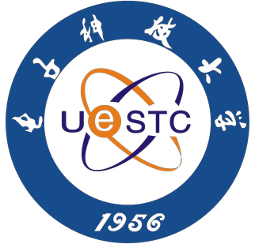
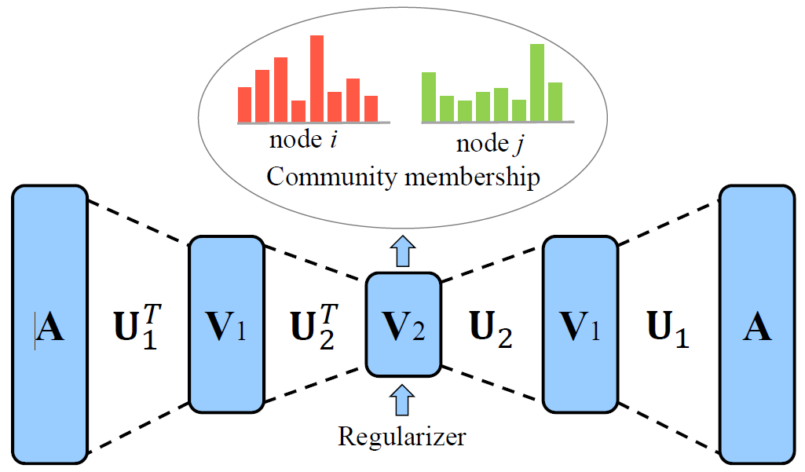
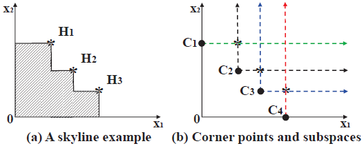
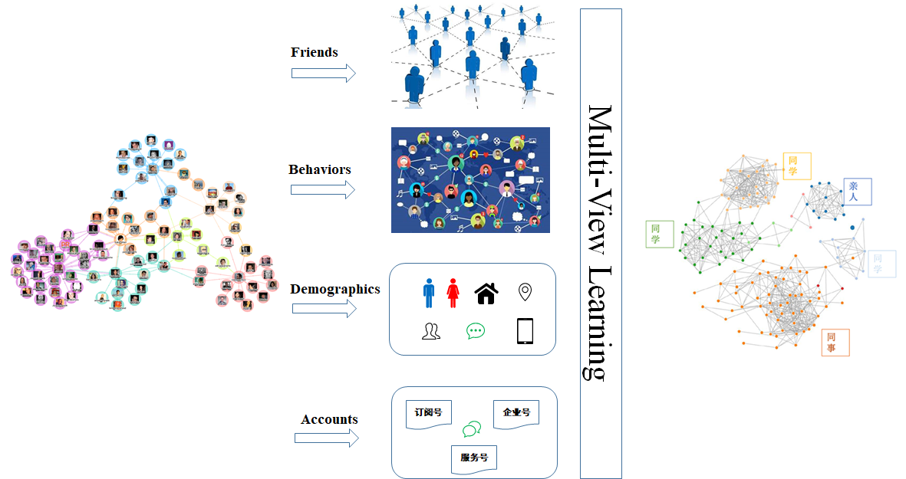
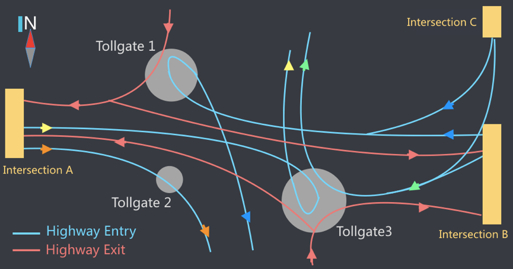
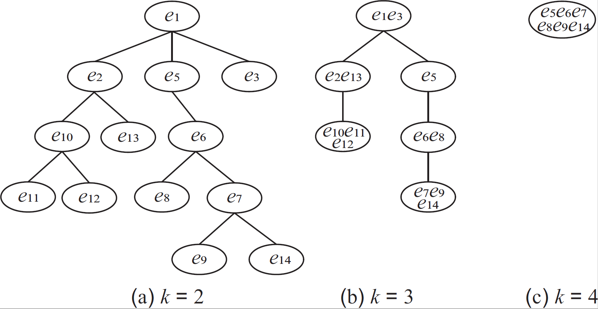

What's New
Education
Master of Science
Computer Science and Technology
Sun Yat-sen University
2016 - Present

Bachelor of Science
Computer Science and Technology
University of Electronic Science and Technology of China
2012 - 2016
Experiences
Visiting Student
The Chinese University of Hong Kong
Summer, 2018
Research Intern
WeChat Group, Tencent Inc.
April 2017 - March 2018
Research Assistant
National High Performance Computing Center
Shenzhen University
March 2016 - May 2016
Selected Projects



Multi-View Learning for Community Detection
Research Intern
WeChat Group, Tencent Inc.
April 2017 - March 2018
Research Intern
WeChat Group, Tencent Inc.
April 2017 - March 2018

Highway Tollgates Traffic Flow Prediction
KDD Cup 2017
Ranking: 36th/3582
March 2017 - June 2017
Certificate
KDD Cup 2017
Ranking: 36th/3582
March 2017 - June 2017
Certificate
{kind=link}

Finding Weighted K-Truss Communities in Large Networks
Zibin Zheng, Fanghua Ye, Rong-Hua Li, Guohui Ling, Tan Jin
Information Sciences 2017 (INS)
Paper
Zibin Zheng, Fanghua Ye, Rong-Hua Li, Guohui Ling, Tan Jin
Information Sciences 2017 (INS)
Paper